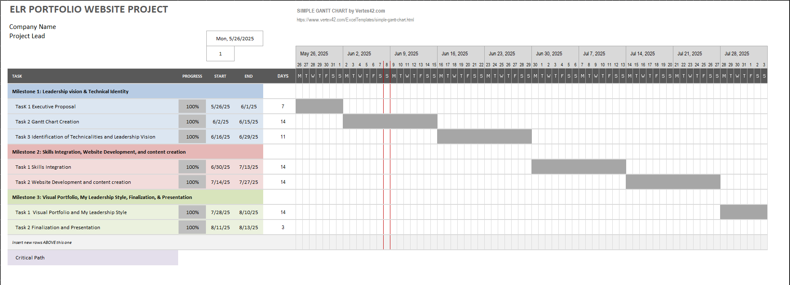

Welcome
This portfolio represents my leadership transformation, showcasing both technical depth and leadership readiness in engineering.
About Me
I am a graduate student in Engineering Management with prior experience in CNC programming, SAP, and mechanical design. My ambition is to lead engineering teams strategically in manufacturing and industrial sectors.
Leadership Vision
I aspire to be a transformational leader by practicing emotional intelligence, servant leadership, and moral courage to create inclusive, high-performing teams.
Systems Thinking Toolkit
Explore the problem-solving frameworks I apply: root cause analysis, decision matrices, and engineering design thinking principles for complex scenarios.
Team Communication & Feedback
This section highlights strategies and tools for collaborative leadership, giving and receiving constructive feedback, and fostering transparent communication.
Cultural Adaptation & Ethical Engineering
Leadership means doing the right thing. Here, I reflect on navigating cultural diversity and upholding ethics in engineering practices.
Project Timeline (Gantt Chart)
This Gantt chart outlines the 15-week project plan, including milestones and deliverables.
 Gantt Chart (PDF) Gantt Chart (Excel)Project Milestones
- Milestone 1: Leadership Vision & Technical Identity (Weeks 1–3)
- Milestone 2: Skills Integration & Website Development (Weeks 4–10)
- Milestone 3: Finalization, Visual Portfolio & Presentation (Weeks 11–15)
Expected Outcome
This project will showcase my readiness to lead. It blends technical, ethical, and leadership proficiencies into one professional digital identity.
Résumé & Contact
Download my résumé and connect with me below.